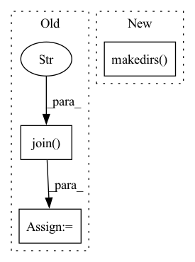

Pattern ID :26119
Before Change
def run(self):
Implements the logic of this task.
gt_buildings_csv = os.path.join( self.config.root_directory,
"SummaryData/SN6_Train_AOI_11_Rotterdam_Buildings.csv" )
gt_buildings = pd.read_csv(gt_buildings_csv)
os.makedirs(self.config.segmentation_directory, exist_ok=True)
// Walk the directory and save the filenames in it
sar_image_paths = glob.glob(os.path.join(self.config.root_directory, "SAR-Intensity", "*.tif"))After Change
Implements the logic of this task.
// Create destination directories if they don"t exist
os.makedirs(self.config.segmentation_masks_dir, exist_ok=True)
os.makedirs( self.config.folds_dir, exist_ok=True)
// Path to the ground-truth buildings csv file
gt_buildings_csv_filepath = os.path.join(self.config.root_dir,
"SummaryData/SN6_Train_AOI_11_Rotterdam_Buildings.csv")
// Read gt building csv fileIn pattern: SUPERPATTERN
Frequency: 3
Non-data size: 3
Instances Fragment ID: 78717077
Project Name: biasvariancelabs/aitlas
Commit Name: f0fec08d1189a9954b03e319e1150189276d4527
Time: 2021-03-16
Author: popovstefan@live.com
File Name: aitlas/tasks/spacenet6_preprocess.py
M Class Name: SpaceNet6PreprocessTask
N Class Name: SpaceNet6PreprocessTask
M Method Name: run(1)
N Method Name: run(1)
M Parent Class: BaseTask
N Parent Class: BaseTask
M File Name: aitlas/tasks/spacenet6_preprocess.py
N File Name: aitlas/tasks/spacenet6_preprocess.py
M Start Line: 103
M End Line: 150
N Start Line: 121
N End Line: 177
Before Change
unzip(zip_path, path, remove=True)
prefix = "MitoEM-H" if sample == "human" else "MitoEM-R"
im_folder = os.path.join( path, prefix, "im" )
train_folder = os.path.join(path, prefix, "mito_train")
val_folder = os.path.join(path, prefix, "mito_val")
print("Create train volume")After Change
def _require_mitoem_sample(path, sample, download):
os.makedirs( path, exist_ok=True)
for name in ("raw", "labels"):
url = URLS[name][sample]
checksum = CHECKSUMS[name][sample] Fragment ID: 78717083
Project Name: constantinpape/torch-em
Commit Name: 3678cd5b41b13445f4522b7ecdb962ece637407c
Time: 2022-03-30
Author: constantin.pape@embl.de
File Name: torch_em/data/datasets/mitoem.py
M Class Name: AnonimousClass
N Class Name: AnonimousClass
M Method Name: _require_mitoem_sample(3)
N Method Name: _require_mitoem_sample(3)
M Parent Class:
N Parent Class:
M File Name: torch_em/data/datasets/mitoem.py
N File Name: torch_em/data/datasets/mitoem.py
M Start Line: 78
M End Line: 101
N Start Line: 96
N End Line: 123
Before Change
points_gdf = update_las_with_decisions(points_gdf, gdf_inspection)
out_dir = osp.dirname(config.inspection.comparison_shapefile_path)
out_name = osp.basename(las_filepath)
out_path = osp.join( out_dir, "las" , out_name)
points_gdf.write(out_path)
shp_inspection_unsure = shp_inspection_all[
shp_inspection_all[ShapeFileCols.IA_DECISION.value]After Change
points_gdf = update_las_with_decisions(las, gdf_inspection)
out_dir = osp.dirname(inspection_shp_unsure_path)
out_dir = osp.join(out_dir, "las")
os.makedirs( out_dir, exist_ok=True)
out_name = osp.basename(las_filepath)
out_path = osp.join(out_dir, out_name)
points_gdf.write(out_path)
log.info(f"Saved updated LAS to {out_path}") Fragment ID: 78717082
Project Name: ignf/lidar-deep-segmentation
Commit Name: e09dda5dd78a1806f2ed4e1f9f27667e344b3f6b
Time: 2021-11-04
Author: charles.gaydon@gmail.com
File Name: semantic_val/decide.py
M Class Name: AnonimousClass
N Class Name: AnonimousClass
M Method Name: decide(1)
N Method Name: decide(1)
M Parent Class:
N Parent Class:
M File Name: semantic_val/decide.py
N File Name: semantic_val/decide.py
M Start Line: 38
M End Line: 87
N Start Line: 42
N End Line: 99